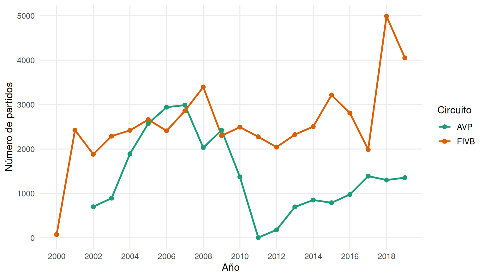
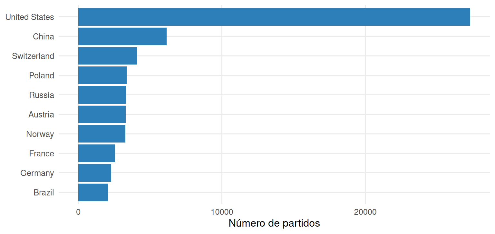

Capítulo 4 Descripción del conjunto de datos
Este capítulo describe el conjunto de datos antes de cualquier análisis: qué variables contiene, cómo se reparten los partidos entre circuitos, géneros y etapas, de dónde vienen los jugadores y qué tan frecuentes son los valores atípicos. Todo se calcula sobre el archivo original, sin modificar.
Estructura y variables
El archivo original tiene 76.756 partidos (filas) y 65 columnas. Cada fila es un partido y cada partido tiene una pareja ganadora (prefijo w_, de winner) y una perdedora (prefijo l_, de loser). Cada pareja tiene dos jugadores (p1 y p2).
estructura <- tibble(
Grupo = c("Torneo", "Jugadores (4 posiciones)", "Ranking", "Resultado",
"Estadísticas de juego (4 posiciones)"),
Variables = c(
"`circuit`, `tournament`, `country`, `year`, `date`, `gender`, `match_num`",
"`player`, `birthdate`, `age`, `hgt`, `country` de `w_p1`, `w_p2`, `l_p1`, `l_p2`",
"`w_rank`, `l_rank` (texto)",
"`score`, `duration`, `bracket`, `round`",
"`tot_attacks`, `tot_kills`, `tot_errors`, `tot_hitpct`, `tot_aces`, `tot_serve_errors`, `tot_blocks`, `tot_digs` de cada jugador"),
Columnas = c(7, 20, 2, 4, 32)
)
tabla(estructura, caption = "Estructura del conjunto de datos original.", digits = 0)| Grupo | Variables | Columnas |
|---|---|---|
| Torneo | circuit, tournament, country, year, date, gender, match_num |
7 |
| Jugadores (4 posiciones) | player, birthdate, age, hgt, country de w_p1, w_p2, l_p1, l_p2 |
20 |
| Ranking | w_rank, l_rank (texto) |
2 |
| Resultado | score, duration, bracket, round |
4 |
| Estadísticas de juego (4 posiciones) | tot_attacks, tot_kills, tot_errors, tot_hitpct, tot_aces, tot_serve_errors, tot_blocks, tot_digs de cada jugador |
32 |
Para el entrenador, lo importante es que las variables se agrupan en tres tipos de información: quién juega (jugadores y ranking), dónde y cuándo (torneo) y cómo salió (resultado y estadísticas). Las estadísticas de juego no están disponibles para todos los partidos, como se verá más abajo.
En total aparecen 8.950 nombres de jugador distintos.
Cobertura por circuito, género y etapa
raw %>%
count(circuit, gender) %>%
pivot_wider(names_from = gender, values_from = n) %>%
mutate(Total = M + W, `% del total` = 100 * Total / sum(Total)) %>%
rename(Circuito = circuit, Hombres = M, Mujeres = W) %>%
tabla(caption = "Partidos por circuito y género.", digits = 1)| Circuito | Hombres | Mujeres | Total | % del total |
|---|---|---|---|---|
| AVP | 13.995 | 11.358 | 25.353 | 33 |
| FIVB | 26.275 | 25.128 | 51.403 | 67 |
La FIVB concentra 67,0 % de los partidos y la AVP el resto: dos a uno. El género está bastante equilibrado: 52,5 % de los partidos son masculinos y 47,5 % femeninos.
raw %>%
count(year, circuit) %>%
ggplot(aes(year, n, color = circuit)) +
geom_line(linewidth = 1) + geom_point(size = 2) +
scale_color_manual(values = col_circ) +
scale_x_continuous(breaks = seq(2000, 2019, 2)) +
labs(x = "Año", y = "Número de partidos", color = "Circuito")
Figura 4.1: Partidos por año y circuito, 2000–2019.
La cobertura no es pareja en el tiempo. El año 2000 tiene muy pocos partidos, todos de la FIVB. La AVP casi desaparece en 2011 y 2012, que coincide con la suspensión de sus operaciones descrita en el capítulo 1 (el dato refleja la historia real, no es un error de captura), y se recupera después de 2013.
Etapa del torneo. La variable bracket tiene 36 categorías, muchas con muy pocos partidos. Para el análisis se agrupan en tres etapas:
agrupar_bracket <- function(x) {
x <- as.character(x)
case_when(
is.na(x) ~ "Sin dato",
x %in% c("Qualifier Bracket", "Qualifier Playoff", "Lucky Losers",
"Country Quota Matches") ~ "Clasificatoria",
grepl("^Pool", x) ~ "Fase de grupos",
TRUE ~ "Cuadro eliminatorio"
)
}
raw %>%
mutate(Etapa = agrupar_bracket(bracket)) %>%
count(Etapa, name = "Partidos") %>%
arrange(desc(Partidos)) %>%
mutate(`% del total` = 100 * Partidos / sum(Partidos)) %>%
tabla(caption = "Partidos por etapa del torneo (`bracket` agrupado).", digits = 1)| Etapa | Partidos | % del total |
|---|---|---|
| Cuadro eliminatorio | 36.003 | 46,9 |
| Clasificatoria | 23.593 | 30,7 |
| Fase de grupos | 17.160 | 22,4 |
- Clasificatoria:
Qualifier Bracket,Qualifier Playoff,Lucky LosersyCountry Quota Matches, todo lo previo al cuadro principal. - Fase de grupos: todas las categorías
Pool A,Pool B, etc. - Cuadro eliminatorio: el resto (cuadros de ganadores y de perdedores, semifinales, finales y partidos por medalla).
Países sede y de procedencia
sede <- raw %>% count(country, sort = TRUE) %>% slice_head(n = 10) %>%
rename(`País sede` = country, `Partidos` = n)
proc <- bind_rows(select(raw, pais = w_p1_country), select(raw, pais = w_p2_country),
select(raw, pais = l_p1_country), select(raw, pais = l_p2_country)) %>%
count(pais, sort = TRUE) %>% slice_head(n = 10) %>%
rename(`País del jugador` = pais, `Registros` = n)
bind_cols(sede, proc) %>%
tabla(caption = "Diez primeros países sede de torneo y de procedencia de los jugadores (las cuatro posiciones combinadas).", digits = 0)| País sede | Partidos | País del jugador | Registros |
|---|---|---|---|
| United States | 27.311 | United States | 112.538 |
| China | 6.158 | Brazil | 25.162 |
| Switzerland | 4.116 | Germany | 16.666 |
| Poland | 3.358 | Switzerland | 9.930 |
| Russia | 3.318 | Canada | 9.597 |
| Austria | 3.302 | Austria | 9.302 |
| Norway | 3.280 | Netherlands | 9.000 |
| France | 2.567 | Russia | 8.283 |
| Germany | 2.297 | China | 7.874 |
| Brazil | 2.070 | Italy | 7.780 |
sede %>%
mutate(`País sede` = reorder(`País sede`, Partidos)) %>%
ggplot(aes(`País sede`, Partidos)) +
geom_col(fill = col_azul) +
coord_flip() +
labs(x = NULL, y = "Número de partidos")
Figura 4.2: Diez primeros países sede de torneo.
Estados Unidos domina ambas listas: es la sede de la mayor parte de los partidos, porque allí se juega todo el circuito AVP además de torneos de la FIVB, y es también el país de procedencia más frecuente. Brasil aparece como segundo país de procedencia de los jugadores, coherente con su tradición en este deporte, aunque como sede está mucho más abajo. Por eso los resultados del libro describen sobre todo a jugadores estadounidenses y brasileños.
Datos atípicos
Se revisan con la regla del rango intercuartílico (IQR): un valor es atípico si queda por debajo de Q1 − 1,5·IQR o por encima de Q3 + 1,5·IQR.
dur_min <- function(x) {
x <- as.character(x)
as.numeric(substr(x, 1, 2)) * 60 + as.numeric(substr(x, 4, 5)) +
as.numeric(substr(x, 7, 8)) / 60
}
iqr_out <- function(x, nombre, unidad) {
q <- quantile(x, c(.25, .75), na.rm = TRUE)
i <- q[[2]] - q[[1]]
lo <- q[[1]] - 1.5 * i
hi <- q[[2]] + 1.5 * i
n_ok <- sum(!is.na(x))
n_out <- sum(x < lo | x > hi, na.rm = TRUE)
tibble(Variable = nombre, `Datos válidos` = n_ok,
`Rango normal (IQR)` = paste0(fmt(lo, 1), " a ", fmt(hi, 1), " ", unidad),
Atípicos = n_out, `% atípicos` = 100 * n_out / n_ok,
Mínimo = min(x, na.rm = TRUE), Máximo = max(x, na.rm = TRUE))
}
edades <- c(raw$w_p1_age, raw$w_p2_age, raw$l_p1_age, raw$l_p2_age)
alturas <- c(raw$w_p1_hgt, raw$w_p2_hgt, raw$l_p1_hgt, raw$l_p2_hgt)
bind_rows(
iqr_out(dur_min(raw$duration), "Duración", "min"),
iqr_out(edades, "Edad", "años"),
iqr_out(alturas, "Estatura", "pulgadas")
) %>% tabla(caption = "Valores atípicos según el método IQR.", digits = 1)| Variable | Datos válidos | Rango normal (IQR) | Atípicos | % atípicos | Mínimo | Máximo |
|---|---|---|---|---|---|---|
| Duración | 74.507 | 13,5 a 73,5 min | 902 | 1,2 | 2,0 | 134,0 |
| Edad | 304.215 | 14,5 a 42,2 años | 2.668 | 0,9 | 13,2 | 67,8 |
| Estatura | 285.071 | 63,5 a 83,5 pulgadas | 754 | 0,3 | 61,0 | 85,0 |
Los atípicos de duración, edad y estatura son pocos y verosímiles: partidos muy cortos o muy largos, jugadores muy jóvenes o veteranos, estaturas en los extremos del deporte profesional. No se eliminan.
Hay otros problemas que el IQR no detecta, pero que sí son errores del archivo y se corrigen en el capítulo 5:
n_bd_imposible <- sum(unlist(lapply(c("w_p1", "w_p2", "l_p1", "l_p2"), function(p) {
raw[[paste0(p, "_birthdate")]] > raw$date
})), na.rm = TRUE)
n_forfeit <- sum(raw$score == "Forfeit or other", na.rm = TRUE)
n_corto <- sum(dur_min(raw$duration) < 10, na.rm = TRUE)
n_texto_rank <- sum(is.na(suppressWarnings(as.numeric(raw$w_rank))))- Fechas de nacimiento imposibles: 8.906 fechas posteriores al propio partido (años como 2053 o 2068 en lugar de 1953 o 1968).
- Rankings como texto: 30.211 valores de
w_rankno son números (por ejemplo"17, Q2"o"Q16"). - Marcadores sin puntos: 893 partidos con
score = "Forfeit or other". - Duraciones sospechosas: 17 partidos de menos de 10 minutos.